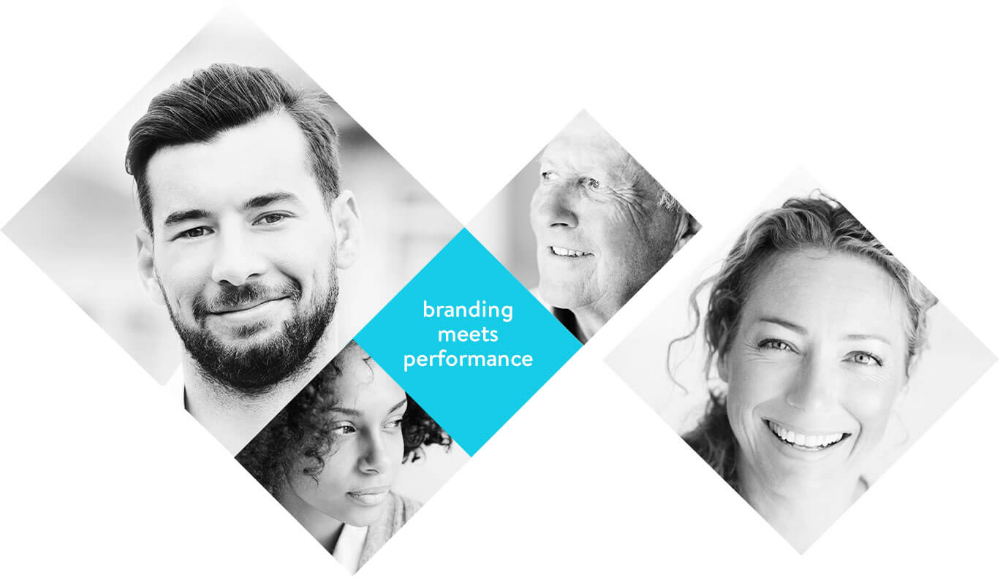
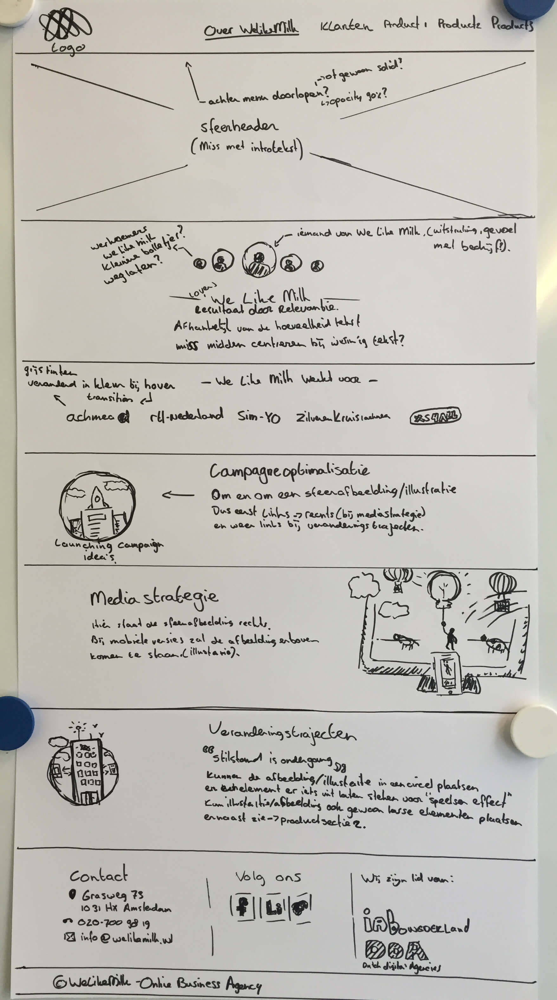
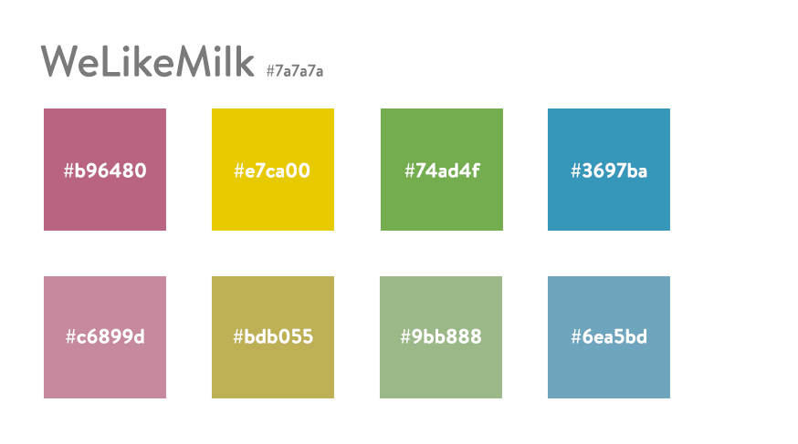
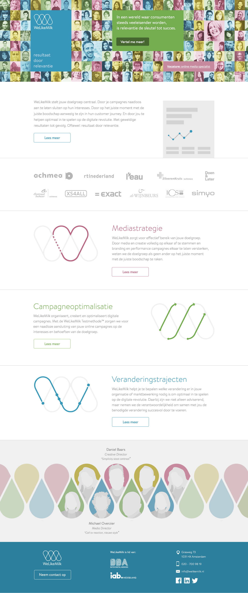

We aimed to address accurate communication of the company name, brand repositioning, and the merger of two unique brand experiences.Marc Billings, CEO @ Blackdove
  
WeLikeMilk is an Amsterdam based agency specialized in marketing. They help big clients like Achmea, Simyo, KPN en Thuiscomfort to optimize their conversion rates.
Near the beginning of last year WeLikeMilk asked me to create a company website for them that showed potential clients what they have to offer in a short and sweet way. For them I created a website that gives clients an idea of what they can expect when working with WeLikeMilk.
UX & Interaction Design / February 2015 - April 2015